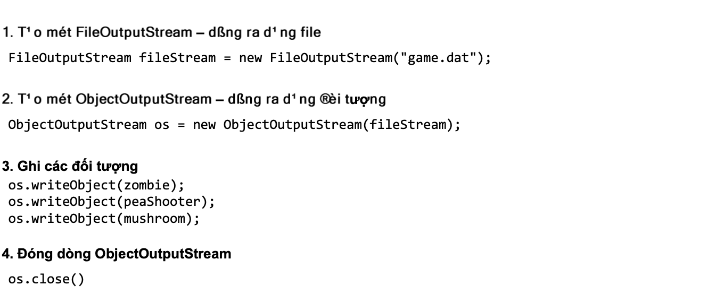

Cách ghi đối tượng chuỗi hóa sẽ được trình bày một cách chi tiết sau. Tạm thời, ta chỉ giới thiệu các bước cơ bản:
Chúng ta đã nói đến các dòng, vậy bản chất chúng là cái gì? Có thể hình dung dòng (stream) như một đường ống mà dữ liệu di chuyển trong đó để đi từ nơi này sang nơi khác. Thư viện vào ra dữ liệu của Java có các dòng kết nối (connection stream) đại diện cho các kết nối tới các đích và các nguồn như các file hay socket mạng, và các dòng nối tiếp (chain stream) không thể kết nối với các đích và nguồn mà chỉ có thể chạy được nếu được nối với các dòng khác.
Thông thường, để làm việc gì đó, ta cần dùng ít nhất hai dòng nối với nhau: một dòng đại diện cho kết nối với nguồn hay đích của dữ liệu, dòng kia cung cấp tiện ích đọc/ghi. Lí do là dòng kết nối thường hỗ trợ ở mức quá thấp. Ví dụ, dòng kết nối FileOutputStream chỉ cung cấp các phương thức ghi byte. Còn ta không muốn ghi từng byte hoặc chuỗi byte. Ta muốn ghi đối tượng, do đó ta cần một dòng nối tiếp ở mức cao hơn, chẳng hạn ObjectOutputStream là dòng nối tiếp cho phép ghi đối tượng.
Khả năng lắp ghép các tổ hợp khác nhau của các dòng kết nối và các dòng nối tiếp mang lại cho ta khả năng linh hoạt. Ta có thể tự lắp ghép một chuỗi các dòng theo nhu cầu của ta chứ không phải đợi những người phát triển thư viện Java xây dựng cho ta một dòng chứa tất cả những gì ta muốn.